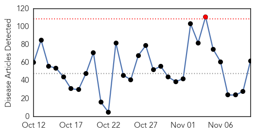
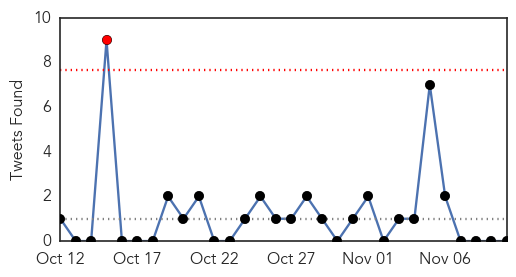

30 Day Trends
Web: 1 alerts, 0 warnings
Twitter: 1 alerts, 0 warnings
Top Articles:
- 0.999
- S. Korea reports 16th MERS death, five new cases
- 0.979
- Tuberculosis case reported at Wright State
- 0.904
- On top of the flu
- 0.903
- Diseases that fuel fertility (1)
- 0.901
- E. coli probe at Chipotle fails to find source
- 0.900
- E. coli probe at Chipotle fails to find source
- 0.900
- Drive through flu shot clinic Nov. 17 at Glynn County Health Department
- 0.894
- Infections at Hershey Medical, York Hospital linked to surgical device, Pa. health department says
- 0.891
- Chipotle restaurants in Kent, rest of state plan to reopen this week after E. coli outbreak
- 0.888
- Call Your Doctor Immediately If You...
- 0.885
- The science doesn’t support them, but Japanese anti-vaxxers are winning on HPV
- 0.884
- 2 Hershey Medical patients die after infection
- 0.884
- 2 Hershey Medical patients die after infection
- 0.863
- Chipotle to reopen restaurants closed after E. coli outbreak
- 0.858
- Facilities enforcing flu shot policies - AltoonaMirror.com - Altoona, PA
- 0.810
- Infections in open-heart patients found at second Pa. hospital
- 0.798
- PinnacleHealth says it has no NTM heart infections, but screening for infections from outside
- 0.788
- Chipotle Plans to Reopen Restaurants Without Knowing E.coli Source
- 0.785
- The Latest on Swine ...
- 0.770
- Rash of E. coli cases highlights foodborne illness problem
- 0.769
- CHIPOTLE RESTAURANTS MAY REOPEN THIS WEEK
No source found for the E.coli outbreak - 0.757
- Rash of E. coli cases highlights foodborne illness problem
- 0.747
- Eradicating polio
- 0.740
- FNArena
- 0.730
- Ex-soldier arrested in Northern Ireland over ‘Bloody Sunday’ killings
- 0.730
- Burma’s Suu Kyi eyes victory, but the military lurks in the shadows
- 0.727
- Wine before diplomacy: Iran snubs French state dinner over alcohol
- 0.726
- Rash of E. coli cases highlights foodborne illness problem
- 0.707
- Chad declares state of emergency in region hit by Boko Haram
- 0.702
- The Latest: 45 people sickened in Northwest E. coli outbreak
- 0.702
- Chipotle reopening Northwest restaurants after outbreak
- 0.667
- Chipotle eateries in U.S. Northwest could re-open after outbreak
- 0.656
- Chipotle reopening Northwest restaurants after outbreak: News
- 0.645
- Cameron walks tightrope on Britain’s EU future
- 0.645
- Interpol highlights crimes against the environment ahead of COP21
- 0.641
- Rash of E. coli cases highlights foodborne illness problem
- 0.631
- Pretoria newborns in danger
- 0.623
- Striking Paktia doctors vow to continue strike
- 0.623
- Chipotle to reopen 43 restaurants after E. coli all-clear
- 0.623
- Chipotle to reopen 43 restaurants after E. coli all-clear
- 0.618
- Controlling levels of specific gut bacteria could help prevent severe diarrhea
- 0.612
- Dignity Health Names Dr. Frederick Johnson Facility Medical Director of Freestanding Emergency Room in Chandler
- 0.611
- Chipotle to Reopen 43 Restaurants After E. Coli All-clear
- 0.603
- New public health legislation planned
- 0.603
- Egypt military releases prominent journalist and rights activist
- 0.595
- Chipotle involved in 4th outbreak this year that was kept secret
- 0.576
- Health officials: Syphilis cases in New Orleans rise at an alarming rate
- 0.575
- Tests fail to turn up E. coli culprit; Chipotle plans to reopen
- 0.571
- Chipotle to reopen 43 restaurants after E. coli all-clear By Reuters
- 0.570
- Yemen: Attacks on health care facilities must stop
Showing top 50 articles...
Top Tweets:
-
No tweets found for Nov 10, 2015
Web/News Articles
Tweets
Article Locations

Article Confidences